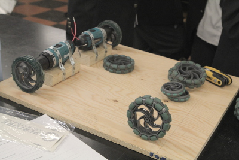

Robotique SHS 2013
Bienvenue
Bienvenue au site web de robotique de l'école Selwyn House!
La compétition cette année est appelé Velistic. Le but principal du robot est de charger des balles et de les tirer pour essayer à frapper des cibles. Les règles complètes se trouvent ici.
Image offerte par Robotique CRC
Nous avons réfléchi sur diverses façons d'accomplir chaque aspect du robot. Pour le mécanisme de chargement, nous avons contemplé deux tapis roulants côte à côte pour ramasser des balles et les garder dans un panier. Pour le mécanisme de tir, nous avons discuté l'utilisation d'un ressort, d'un moteur de balai d'essuie-glace, ou d'un moteur de perceuse comme moyen de propulsion.
Nous avons construit la base du robot avec du bois. Nous avons décidé d'utiliser deux roues multidirectionelles comme roues non motrices, pour faciliter la conduite.
À l'échéance du site web (le 8 février), nous n'avons pas encore complété la construction de notre robot. Pour informations et photos à jour, veuillez visiter notre page Twitter.
Accessoires pour notre kiosque
Notre thème est inspiré du jeu vidéo Portal. Portal est un jeu de réflexion par Valve Corporation. L'idée de l'utiliser comme notre thème est venue à l'esprit pendant la compétition de l'année passée. Nous l'avons adopté en raison de l'obsession du jeu de quelques équipiers, notre détermination d'éviter le même manque de progrès avancé que l'année passée, et l'absence d'autres idées.
En plus d'utiliser un jeu vidéo comme notre thème, nous voulons sensibiliser sur Child's Play, une charité qui fournit des jouets et des jeux aux enfants moins fortunés.
Image offerte par la charité Child's Play
Sur ce site web, les couleurs, la mise en page et les rectangles pivotants sont inspirés de Portal.
Westmount (Montréal), Québec
Images offertes par Selwyn House School
École préparatoire pour université/CÉGEP pour garçons de la maternelle au secondaire V.
Pièce d'outils de robotique
Nous avons coordonné et effectué les travaux nous-mêmes, mais nos professeurs nous ont supporté quand nous l'avions besoin. Ils nous ont fourni de l'équipement, ils ont sacrifié leur temps pour nous superviser, et ils nous ont aidés de manière subtile mais cruciale.
Cliquez sur le nom d'un équipier pour afficher ou cacher leurs paroles (si disponibles).
YanLun Chan Nicholas ClaxtonAs far as what i have contributed to the robotics team, I believe i am one of the driving forces behind the team. Like the others, I have helped around with just about everything. I came up with the original design for our kiosk, and met up with several of my peers over the summer to plan out the year. I can safely say that i have a large influence on the project. As far as what I have learned, and this is more over two years of robotics, I have learned that action is necessary to accomplish anything. Discussion is useful, but ultimately does not accomplish anything.
Luca D'Angelo
As an employee of the Selwyn Laboratories robotics corporation, any contribution or opinion expressed by our colleague’s, plays a crucial role in the overall involvement and production of the robot.
My assistance to the group and the project, involves helping the other members with their ideas, and improving upon them together. This ensures that we create the best product we can. I have also generated the basic idea for our T-Shirt design. The apparel will be exclusively available to the employees of Selwyn Laboratories only. For the sake of visualization, I replicated the Playing Field in a virtual 3d model. I also like to lend a hand to anyone who needs assistance.
Of the many things that lead to the success of our team, understanding how to cooperate in a group only benefits everyone; and in the long term, will improve the overall experience and quality of work from the team. I have learned from this experience, that you may not always be able to have things go the way you want, and how to accept the decision of the majority.
I have enjoyed working on this project a lot, but the thing that made me want to work, was the fact that I could express my ideas. Everyone would consider each other’s ideas, and if it was possible, they would be applied to the project. At least one idea from each team member has influenced the original blueprint, and has actually been used.
We have not struggled as a group, but of the things that were challenging, finding the time to accomplish some of the many tasks that were required to complete the project, was very difficult. These cons are outweighed by the pros of this experience, and will be one that I never forget.
Luca D’Angelo
Selwyn Laboratories
As part of the Selwyn Laboratories Corporation, I have helped with almost everything, but particularly with the paining of the kiosk and contributing ideas to the initial design of the robot. I have been with the robotics group since last year, and it didn’t look so good last year. Therefore, under Yan and Charles’ lead, we have worked more efficiently this year, and probably will be more successful with the work we have put in. We have successfully constructed our kiosk along with all of the other required parts of the competition and will have our robot ready for the competition. I hope we’ll have a blast at the competition.
Frederick Pelletier Goulet Charles McCluskeyI’ve been in the Selwyn robotics team since grade 9, and I’m currently in grade 11. The two previous years were… sad, to be honest. However, Yan and I have decided to take this year by the horns and make our last year at Selwyn a worthwhile one. My own role can be described as chief engineer behind the robot as well as providing mathematical calculations behind whatever needs them. My father is an electrical engineer and has been offering a lot of great advice, especially about things that we’ve had little experience with. I’ve also been taking both the regular physics course as well as the advanced physics, honors science, and calculus courses. Since I want to become a bio-medical engineer in the future, it’s a position that eagerly jumped at.
YanMaurice McNiven
As team captain/CEO of Selwyn Laboratories I mainly organise everybody and make sure that everyone is doing something, as a result I have massive headaches once a week and constant anxiety but that’s okay! As CEO/ team captain almost everything goes through me so I manage to stay rather well informed about everything, whether that be the website, the kiosk or the robot I try to understand it all. I’m in charge of reminding people of work days and then nagging people about not showing up on the work days. All in all I’m very happy being team captain/ CEO and although it might be a lot of work, the people I work with make it all worth it; As well as pizza… and portal guns.
Yan out!
I was given the task of building our robots scoop. I found the materials came up with the design and built it. I learned that you don’t always have to know what going on with the robot as you and your team are building it because if everyone does what they are supposed to the team works like a well oiled machine quickly and efficiently. I enjoyed watching the robot slowly come together first as just an idea then as a design and then as an actual working machine. I also enjoyed working with the guys on my team and getting to know them better. I’m the kind of guy that always has to be doing everything, (I don’t trust anyone) so when I joined the team as the youngest member I was forced to do what I was told and not tell people what to do as I was used to. But in the long run I think this has made me a better team member.
Jason SmallI am in charge of filming and producing the team video, but try to help out with the robot whenever I can. Throughout all of this I am constantly reminded the everything ALWAYS takes more time then you think it will. Nonetheless, I enjoy seeing everything come together in the end.
Samuel Stein Himanshu Talwar
What I learned: That teamwork is important and orginization is key. Staying on task can be hard but getting things done, at the end of the day is really what it is all about.
What I helped most with: I mostly did whatever when whoever needed me. You can call me a Handyman of sort. If you need me helping in the electronics, I'd be more than happy to assist you, If you need me helping with the design, I'll be there or if you need me cutting wood, then i'll be there.
I made this website. 'Nuf said.
Kevin Boyle
Mike Downey
Tom Downey
Stephanie Lynam
Ce site web a été conçu et développé à partir de rien. Le JavaScript peut être accédé ici et le code CSS ici. Aussi, ce site utilise du code HTML valide: cliquez ici pour vérifier la validation. Le code CSS est valide, excepté quelques éléments modernes (liser ci-dessous).
Toute image sans référence a été créee par les membres de l'équipe. Portal et le logo Aperture Laboratories sont des marques déposés de Valve Corporation. La police utilisée dans l'entête est appelée Orbitron, distrubuée librement sur Google Web Fonts
Si vous êtes en train de visiter ce site web avec Internet Explorer 9, vous témoignez une version parfaitement fonctionnelle mais légèrement inférieure. Cela est causé par le fait que ce navigateur ne supporte pas les fonctions modernes de CSS3 qui rendent possible des effets visuels comme des transitions lisses. Tous les autres navigateurs majeurs, notamment Google Chrome, Mozilla Firefox, Safari, et Opera, ont déjà supporté ces fonctions pour quelques années. Internet Explorer ne se met pas à jour régulièrement, alors ses versions deviennent obsolètes rapidement. Ainsi, ce n'est pas surprenant que Internet Explorer 8 affiche ce site beaucoup moins fidèlement. Il est dépassé, mais fonctionne encore. Les versions antérieures de Internet Explorer ne sont pas supportées.
Tout cela dit, veuillez reconnaitre que ces incohérences ne sont pas la faute du développeur. L'usage d'un navigateur autre que Internet Explorer bénéficie les utilisateurs, et les développeurs aussi, et améliore le futur du web. Alors, si vous visitez ce site avec un des navigateurs mentionnés, vous allez probablement être encore plus impressionné.
Finalement, il est notable que ce site web s'adapte aux écrans de toutes tailles. Constatez vous-mêmes en redimensionnant la fenêtre de votre navigateur, ou mieux encore, visitez ce site avec votre appareil mobile!
Merci d'avoir évalué ce site web.